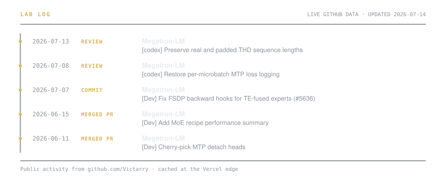

Victarry
Dennis (Zhenhuan) Liu — Megatron-Core, NVIDIA.
MoE at multi-thousand-GPU scale: expert parallelism, communication/computation overlap, pipeline scheduling.
Projects
| Repo | Focus | |
|---|---|---|
| PP-Schedule-Visualization | Interactive visualizer for pipeline-parallel schedules | viz |
| PyTorch-Memory-Profiler | Tensor-level GPU memory allocation profiler | profiling |
| Megatron-LM | Large-scale transformer training and Mixture-of-Experts | moe |
| Image-Generation-models | From-scratch studies of generative image models | research |
Lab log

Live GitHub data · one-hour edge cache · automatic stale fallback